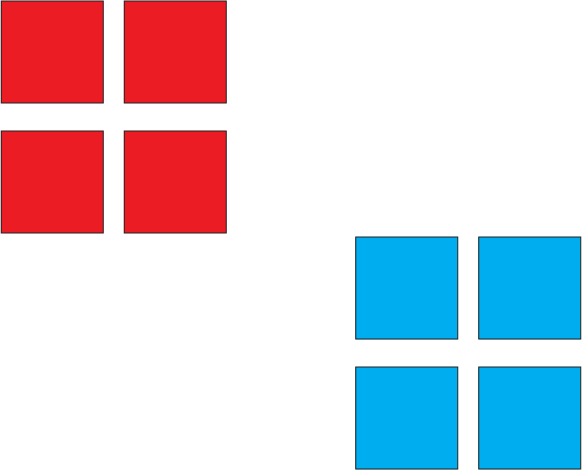
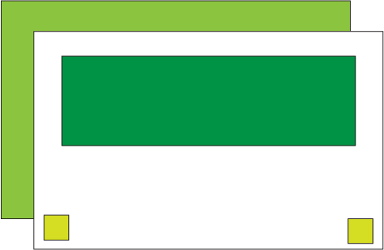
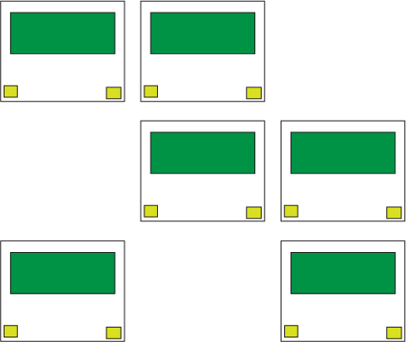

Everything is a box with 4 basic parts. Margin, Border, Padding, and Content. Look at this.
Inspect Me
properties that define the box model (margin, border, and padding) can be written in several ways. For instance, margin, is shorthand for margin-top, margin-right, margin-bottom, margin-left
/* either */ margin-top : 3px; margin-right : 13px; margin-bottom : 17px; margin-left : 7px; /* or top, right, bottom, left */ border : 3px 13px 17px 7px; /* or top, left/right, bottom */ padding : 5px 10px 5px; /* or top/bottom, left/right margin : 10px 20px; /* or top/bottom/left/right */ padding : 15px;
The area past the border, fills the space of the parent on block level elements. Can be specified in px or percentage.
margin : 25px 10% 15px 6%;
Example:
Since margin will fill the parent, we can use auto to make up the different
between the width of our box and the width of the parent
border is shorthand for border-width, border-style, and border-color
/* width, style, color */ border : 1px solid black;
See page 310 for more border styles
The space between the border and the content.
padding : 35px;
Content can have a fixed height and width. Height and Width can also be specified as min or max
How to line stuff up in CSS
The Browser puts things where it thinks they should go based on their display. Basically, tags fall into two categories : block and inline.
section
article
div
h1, h2, etc
header, footer
p
span
a
em
strong
code
abbr
If no width is specified, a block element takes the width of its parent. A block level element will cause a "line break"
If no width is specified, an inline element will take the width of it's content. An inline element will not cause a "line break". You're not supposed to put block elements inside of inline elements.
When things are floated, they leave the page flow. And non-floated elements ignore them.
Block level elements that come after floated elements can clear the float from the flow.
If the width of the container can't support all the floated elements, the floated element will "drop" down below the previous floated element
If you need finer control of the position of elements you can specify the distance either relative to it's parent, or an absolute value in the window.
Static (default), Relative, Absolute, Fixed
Top, Left, Bottom, and Right
If no position is specified, an element is considered static and is positioned by page flow. Since these elements are in page flow, specifying an offset doesn't do anything.
If an element is position relative, its position is based relative to its static position.
If an element is position absolute, its position is based absolutely from its last relative postioned ancestor. If none, of it's ancestor is position relative, it will use html (the document)
If an element is position fixed, its position is based absolutely on the window.
We're going to start with floats. Boxes in red are float left, and boxes in blue are float right.
For the positioning practice, I just used green, so it wouldn't be confused with the floats.


